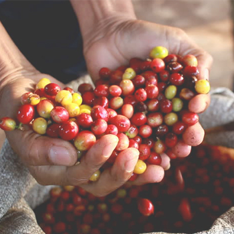
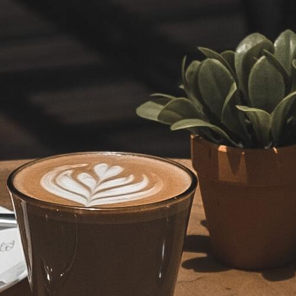

創辦人 | Elgar Wu
ELGER，畢業於OOOXX所，但是沒有走上台灣理工科系畢業生傳統發展路徑，而是追尋很早就確立的夢想「煮一杯好喝的咖啡」。 高中時期不知不覺中養成了喝咖啡的習慣，上了大學後學校附近卻沒有什麼咖啡廳可去，又想一解自己的咖啡癮，於是購買了人生中第一支咖啡壺。有了咖啡壺，才發現沖煮咖啡其實沒有想像中簡單，既然有了咖啡壺就不只想喝咖啡，而是喝「好喝的咖啡」，就是這股慾望，讓受過理工科系訓練的我，不斷反覆思考，要如何煮出自己滿意的咖啡？如何煮出品質一致的咖啡？現在回頭看，其實這個很微不足道的想法，就是我們經營Simple Kaffa品牌的初衷，我很開心，時至今日我們從未悖離。
農場直營產銷的新鮮
我們的咖啡豆來自世界各國的，包含中南美洲、非洲、阿拉伯半島、亞洲等各個產區OKLAO始終堅持緩慢烘焙工藝，唯有如此才能確保豆子發揮出它最天然的口感和香味，在選取、儲存、混合、烘焙、研磨到製作，所有步驟皆自主獨立完成。


歡迎來到我們的咖啡樂園
AmberJar精品咖啡以全新的樣貌於2019年5月在鄰近台北華山藝文特區旁忠孝東路二段的新店址為各位朋友服務，在這個比較寬廣的二層樓空間，我們規劃了能支持獨自享受咖啡、朋友聚會與大型活動的咖啡空間，另外針對咖啡體驗課程規劃了獨立的咖啡教室，未來我們將為咖啡愛好者開立一系列咖啡體驗課程。另外，這間店對我們意義重大，也是這麼多年來我們想對喜愛我們的朋友所說的話，其中包含了我們的感謝、我們長久堅持的咖啡理想、我們對於咖啡體驗的詮釋，希望這個全新的咖啡空間能讓喜愛我們的朋友看見我們的成長與成熟，誠心盼望喜愛Simple Kaffa的朋友能繼續支持我們，我們也將努力提供更好的咖啡品飲體驗。